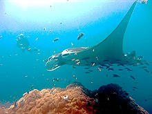

Captivity
There are few public aquariums with giant manta ray in captivity. Since 2009, captive manta rays have been classified as Ꮇ. alfredi and there have been no facilities to display Ꮇ. birostris for some time.

Since late 2018 it has been exhibited at Nausicaä Centre National de la Mer in France and Okinawa Churaumi Aquarium in Japan. There are also reports that they were kept at the Marine Life Park, part of the Resorts World Sentosa in Singapore.